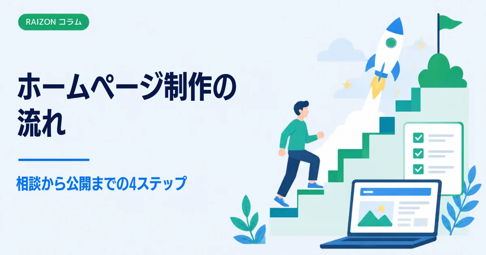
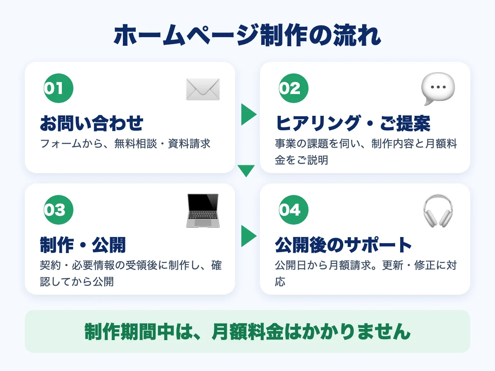
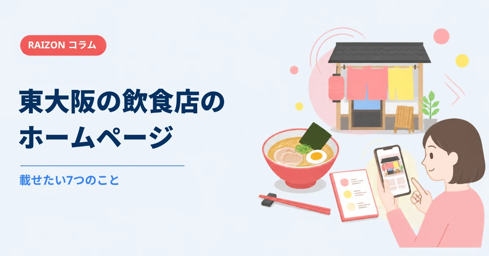
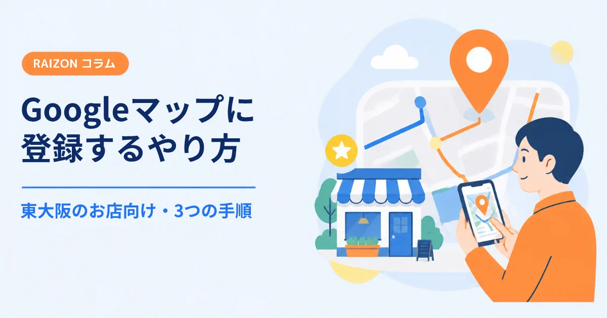
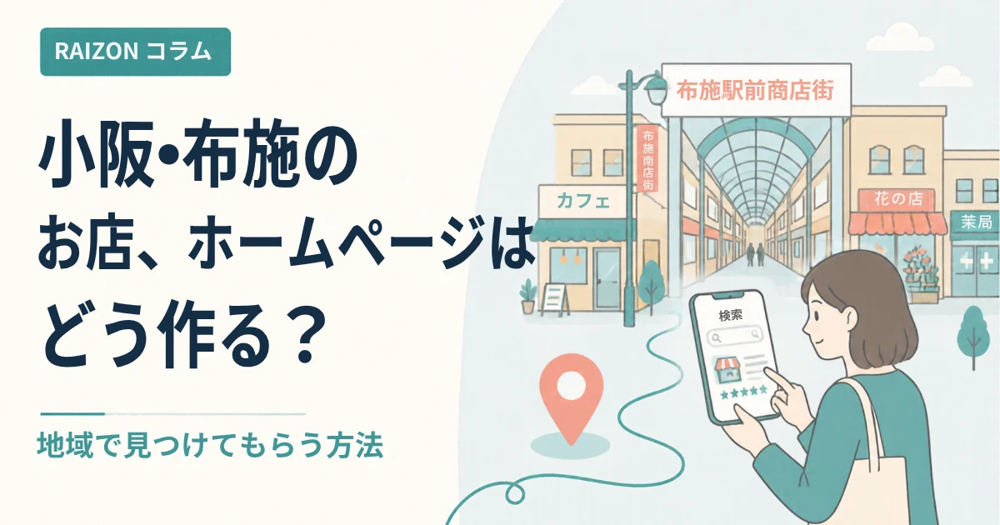

ホームページ制作の流れ｜相談から公開までの4ステップと準備するもの

「ホームページを作りたいけれど、頼んだらどんな順番で進むのかわからない」という方は、少なくありません。流れがわかっていると、準備するものも見えて、安心して相談できます。この記事では、相談してから公開までの流れを、4つのステップに分けて説明します。
- 流れは「お問い合わせ → ヒアリング・ご提案 → 制作・公開 → 公開後のサポート」の4ステップ
- 文章や写真が完璧でなくても、相談は始められる
- RAIZONでは、制作期間中に月額料金はかからない（公開日から請求）

ステップ1：お問い合わせ
まずは、お問い合わせフォームから、無料相談や資料請求を申し込みます。この時点では、細かいことが決まっていなくても大丈夫です。「どんなホームページがいいかわからない」「費用の目安が知りたい」といった段階で、構いません。
ステップ2：ヒアリング・ご提案
ホームページの有無や、事業の課題を伺います。そのうえで、制作の内容と、月額料金を説明します。ここで、載せたい内容（サービス・料金・実績など）や、お客様に何をしてほしいか（電話・予約・来店など）を整理しておくと、話が早く進みます。考え方は、ホームページを作る前に決めておきたい5つのことにまとめています。
ステップ3：制作・公開
契約と、必要な情報の受け取りが済んだら、制作に入ります。できあがった内容を確認していただき、問題がなければ公開します。制作の期間は、内容や、情報がそろう早さによって変わります。目安は、ご相談のときにお伝えします。
ステップ4：公開後のサポート
公開して終わりではなく、そのあとも更新や修正の相談ができます。更新の考え方は、ホームページの更新は、どのくらいの頻度で必要？をご覧ください。
準備しておくと、早く進むもの
| 準備するもの | ポイント |
|---|---|
| ロゴ・屋号 | なければ、文字だけでも進められる |
| 写真 | 外観・商品・スタッフなど。スマホの写真でもよい（撮り方のコツ） |
| 営業時間・住所・電話番号 | Googleマップと同じ表記にそろえる |
| サービス内容・料金 | メモ書きでも大丈夫 |
| 参考にしたいホームページ | 好みや雰囲気を伝えやすくなる |
文章づくりが苦手でも、RAIZONの月額プランには、文章作成のサポートが含まれています。
費用は、いつから発生する？
RAIZONの場合、初期制作費は0円です。月額料金は、ホームページの公開日から請求を始めます。制作期間中に、月額料金は発生しません。月額は9,800円（税抜）で、月4回までの修正・更新を含みます。最低契約期間もありません。月払いの場合のみ、初回に契約手数料5,000円（税抜）がかかります。費用の見方は、東大阪のホームページ制作の費用相場で、詳しく解説しています。
よくある質問
相談だけでも大丈夫ですか？
はい。相談したからといって、契約をおすすめすることはありません。まずは、気になることをお聞かせください。
文章や写真が、まだ用意できていません。
大丈夫です。文章は作成のサポートがあり、写真もスマートフォンで撮ったもので始められます。足りないものは、一緒に整理します。
公開したあとに、内容を変えられますか？
軽微な更新・修正は、月4回まで、プランの範囲で対応します。新しいページの追加や、デザイン全体の変更などは、別途お見積もりです。
制作の期間は、どれくらいですか？
内容や、情報がそろう早さで変わります。具体的な目安は、ご相談のときにお伝えします。まずは、お問い合わせフォームからご連絡ください。
ほかのコラム

制作の基礎東大阪の飲食店のホームページに載せたい7つのこと｜メニュー・地図・予約
東大阪の飲食店がホームページを作るとき、載せておきたい情報を7つに整理しました。メニューと料金、営業時間、行き方、写真、予約・問い合わせ、お店の紹介、お知らせの載せ方をやさしく解説します。

集客・運用Googleビジネスプロフィールの登録のやり方｜東大阪のお店向け・手順と準備
東大阪のお店や会社が、Googleマップに情報を載せるための「Googleビジネスプロフィール」の登録手順を解説します。準備するもの、オーナー確認、登録後に整えることまで、図でわかりやすくまとめました。

集客・運用小阪・布施・八戸ノ里のお店のホームページ｜地域で見つけてもらう5つのコツ
東大阪の小阪・布施・八戸ノ里・河内小阪で、お店や会社のホームページを作るときのコツを5つにまとめました。地域名の入れ方、Googleマップとの連携、写真、問い合わせ導線までやさしく解説します。